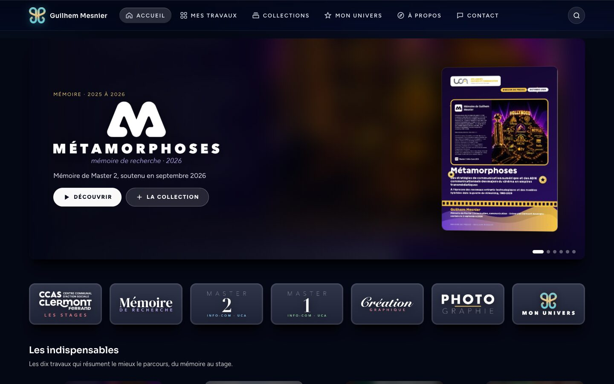
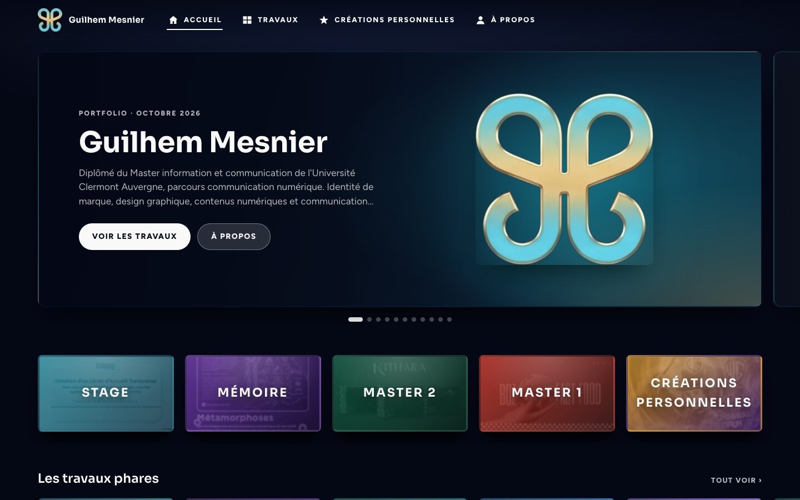
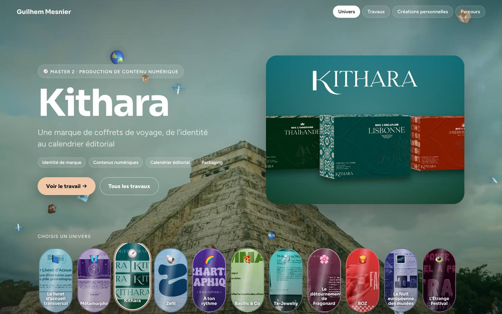
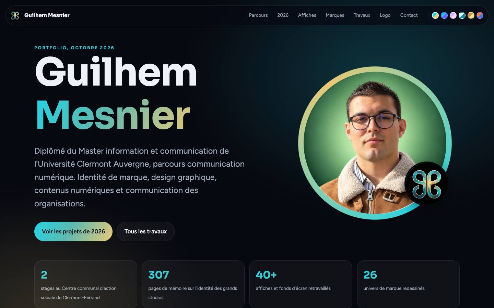
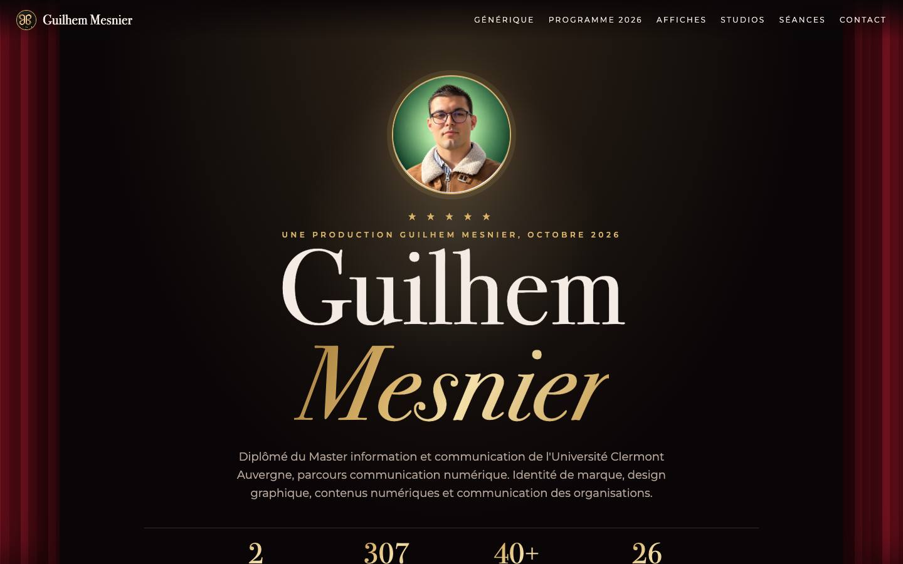
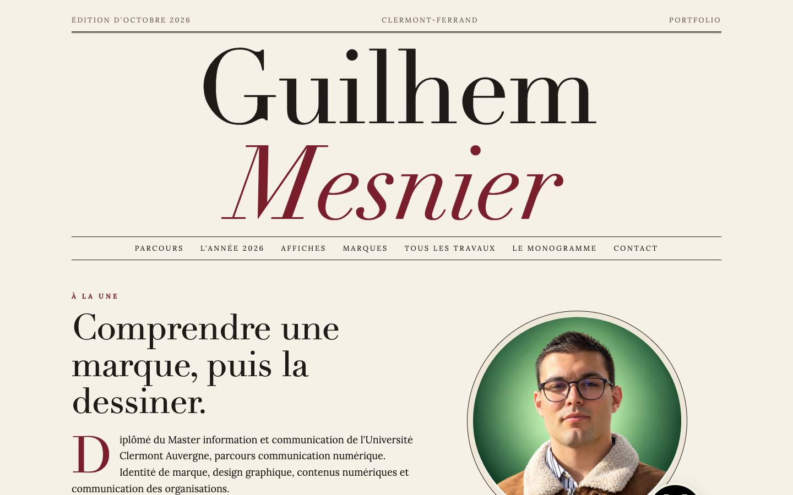
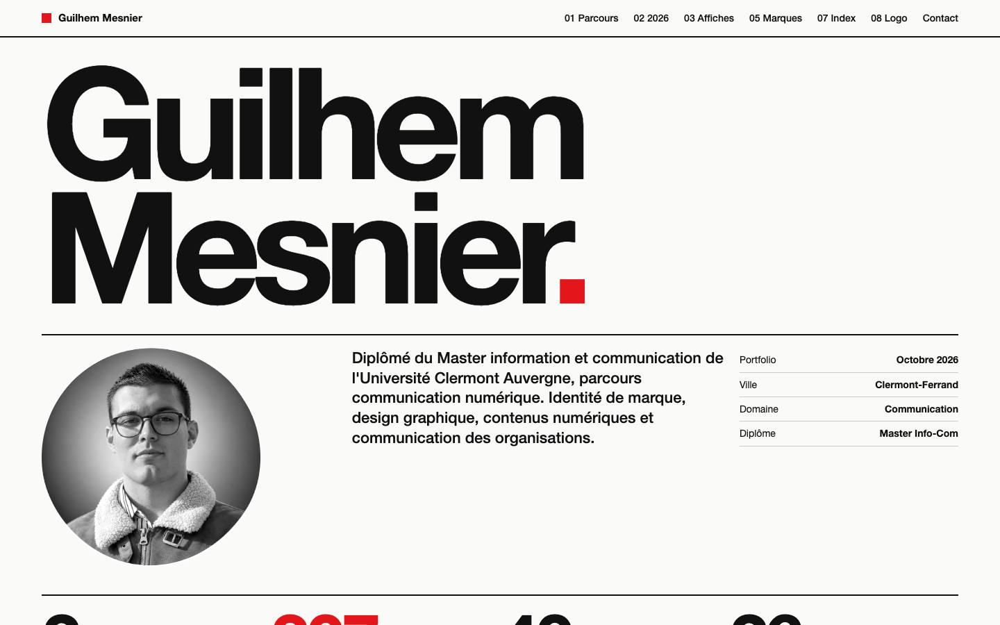
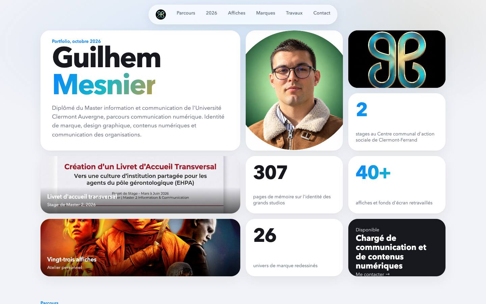

Huit façons de montrer le même travail
Les huit portfolios montrent les mêmes travaux de Master, de stage et de mémoire, et les mêmes créations personnelles. Seuls le style et la manière de naviguer changent. Il suffit d'en choisir un.

🏰 Façon Disney+
Comme une plateforme de streaming : un carrousel en haut, des tuiles avec le logo de chaque travail, des collections, des playlists, la recherche, et une page par travail avec sa propre façon d'être montré (livre, boule, tunnel, cartes holographiques, accordéon). Trois réglages : sans carrousel, plus professionnel, plus d'effets.
Nouveau, le plus complet
🏰 Façon Disney+, première version
La première version façon plateforme de streaming, gardée telle quelle pour comparer.
Version précédente
🌍 À univers
Chaque travail est comme une canette : quand on clique dessus, toute la page prend ses couleurs. Il y a une page par travail, avec la consigne, ce qui a été fait, le développement et un diaporama.
Une page par travail
🦋 Principal
Le portfolio de référence, sur un fond sombre en dégradé, qui montre tout sur une seule longue page.
Version principale
🎬 Cinéma
Un rideau rouge qui s'ouvre, un générique et un programme, comme une salle de cinéma.
Bodoni et Montserrat
📰 Éditorial
Une mise en page de magazine, en ivoire et bordeaux.
Didot et Lora
🟥 Suisse
Une grille stricte, en noir et rouge, dans l'esprit du style typographique suisse.
Helvetica Neue
🫧 Bento
Des tuiles claires et arrondies, comme une boîte à bento.
Avenir Next